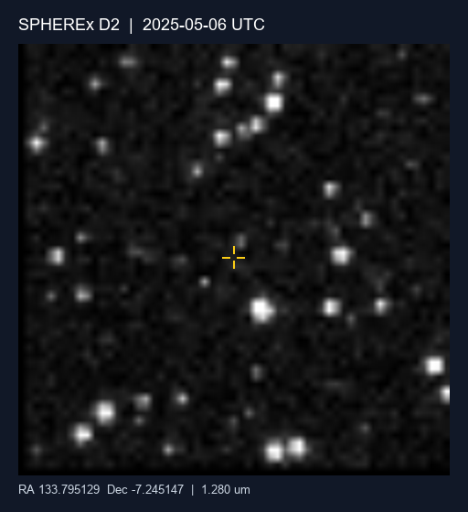

Find observations
Select records covering the same field from the NASA/IPAC IRSA SPHEREx DR1 archive using target coordinates.
Switch between two infrared observations of the same sky field from SPHEREx. Enter coordinates, play the time series, or drag the divider to find points worth a closer look.
Start exploring
These two frames come from real SPHEREx DR1 data, aligned on the sky and shown with the same brightness scale. They demonstrate a reproducible time-comparison workflow; visual inspection alone cannot confirm motion or brightness change for WISE 0855.
Select records covering the same field from the NASA/IPAC IRSA SPHEREx DR1 archive using target coordinates.
Use two observations from the same detector with similar wavelengths at the target position for an initial visual comparison.
Cut out a 6 arcminute field, subtract the archive ZODI model, align with WCS, and use one display scale.
This publication makes use of data products from the Spectro-Photometer for the History of the Universe, Epoch of Reionization and Ices Explorer (SPHEREx), which is a joint project of the Jet Propulsion Laboratory and the California Institute of Technology, and is funded by the National Aeronautics and Space Administration.